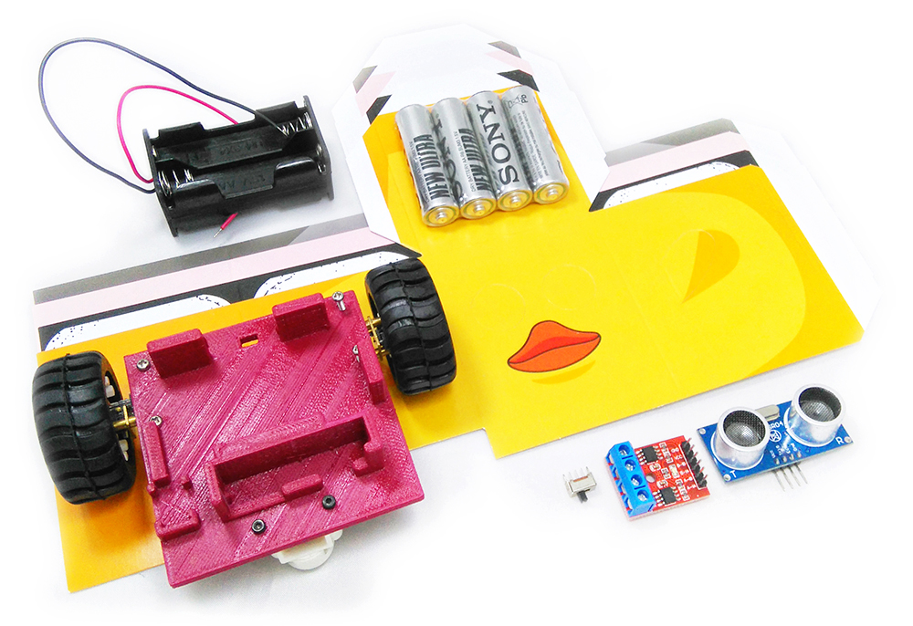

Webduino 公仔自走車 ( 電子材料包 )
Webduino 公仔自走車是 Webduino 自主研發的產品，可以完美搭配 Webduino 馬克 1 號開發板，車體使用 3D 印表機印製，馬達使用兩顆高扭力微型金屬減速馬達，以四顆 3A 電池作為動力輸出，產品內更附贈四組紙公仔造型，透過網頁技術可以實現「語音聲控」、「鍵盤操控」、「自動避障」...等各種有趣的控制方式，進階玩家更可以讓多台車互相連動，或結合行動裝置做出各種應用。( 本零件包內不含 Webduino 馬克 1 號 )
售價：
新台幣 1,425 元整 ( 已含稅，原價 1,575 元 )
產品內容：
- 1. 公仔車車體 ×1 ( 已經和馬達、輪子、電池盒、馬達驅動晶片、超音波傳感器...等組裝完成 )
- 2. 高扭力微型金屬減速馬達 ×2
- 3. 輪子 ×2
- 4. 萬向輪 ×1
- 5. 馬達驅動晶片 ×1
- 6. 超音波傳感器 ×1
- 7. 開關 ×1
- 8. 紙公仔 ×4
- 9. 3A 電池 ×4 ( 照片廠牌僅供參考 )
產品照片：

Webduino 公仔自走車影片 ( 語音聲控五台自走車 )：
Webduino 馬克 1 號組裝後長相：
本零件包內不含 Webduino 馬克 1 號，和馬克 1 號的接法：超音波傳感器「 VCC 接 3.3V，trig 接 11，Echo 接 10，GND 接 GND」，馬達驅動晶片「VCC 接 VCC，B-B 接 6，B-A 接 7，A-B 接 8，A-A 接 9」

套用四種不同造型紙公仔：